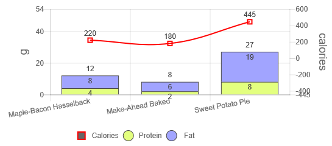

Potato.js
The JavaScript Library that turn complicated code into something more joyful.
potato javascript is the another way of coding the web application.
It extend the HTML code with custom tag.
It group the relevant code into one location (a html tag) to make the code much easier to maintain
and to let you write less code and keep your code simple to save your time on building application.
It is easy to learn, use and master.
Getting Started
The basic syntax of the code is looked like this:
< potato-[object type]-[object id] [attribute1 attribute2...] />
For example if you want to create a button to alert out "my potato button" you just write the following code on the html document:
※You can use the keyword "potato" or just "o" as the [system name] for example < o-button-mybutton /> also will do.
I call it OButton
Example 2: Create a text box object with input keypad (i.e. OKeypad)
Example 3: Create a bar Chart object (i.e. OChart)

|

|
Installing
Step by step Setup
Built With
potato javascript requires jquery-3.4.1.js or later and jquery-ui.js.
https://jquery.com/download/ or
https://github.com/potatoscript/potato.js
To create chart object with potato the chart.js was required and the library can be obtained from
https://www.chartjs.org/ or
https://github.com/potatoscript/potato.js
Contributing
Please read Wiki for details on the library.
Authors
I am K.S.LIM the author from SARAWAK SIBU currently live in JAPAN,
I graduated from engineering background (Mechanical Engineering at Coventry University UK in year 1999), but my final year project had led me to the world of programming. (Developing software to find the natural frequency and damping factor from the input data as provided from some vibration measurement device.) This is my final year’s undergraduate project. It combined the fields of engineering and programming.
The result was good and encouraged me continue to develop my programming skill until now.
This is my first JavaScript Library, which was developed since year 2010.
I call it potato javascript or o script (o=potato, why because its as easy as potato)
License
The library is licensed under the terms of the GNU Lesser General Public License (LGPL) version 2.1 or later.